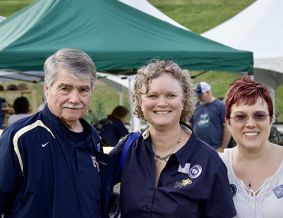
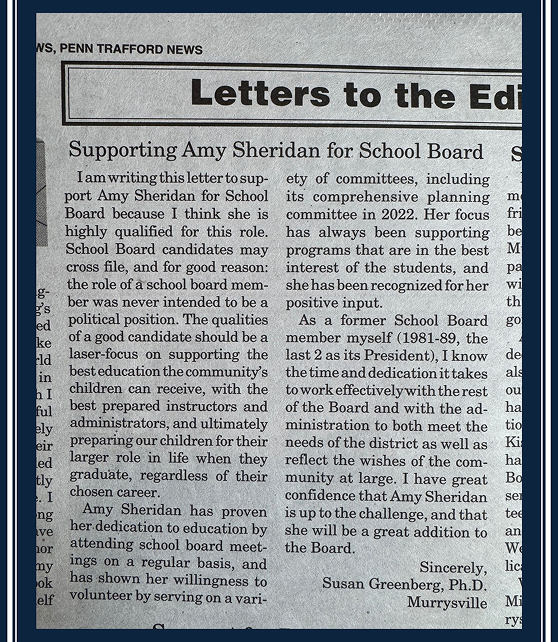
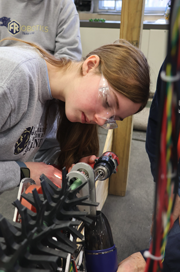
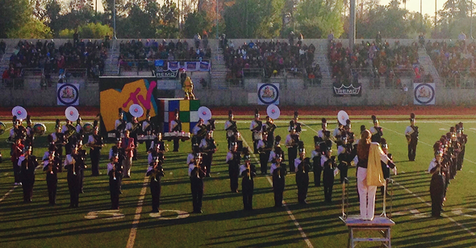
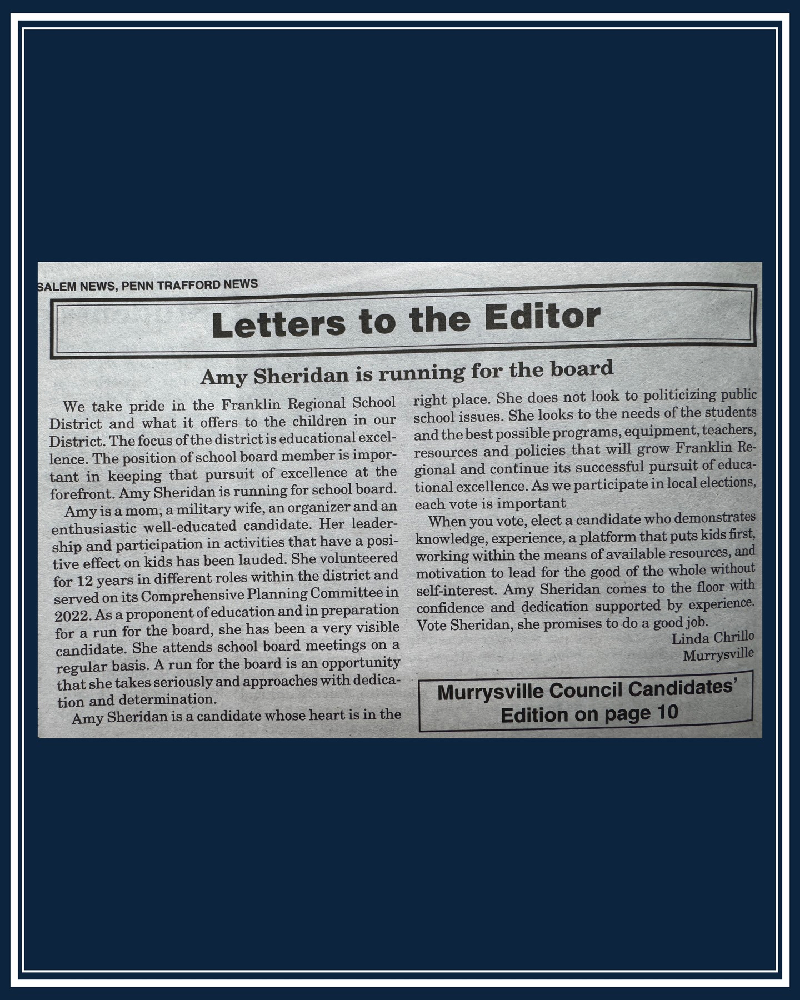
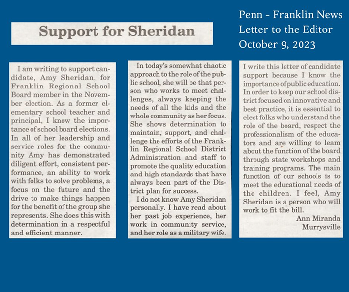
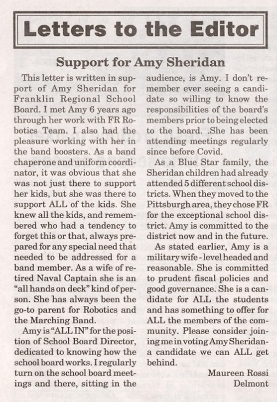
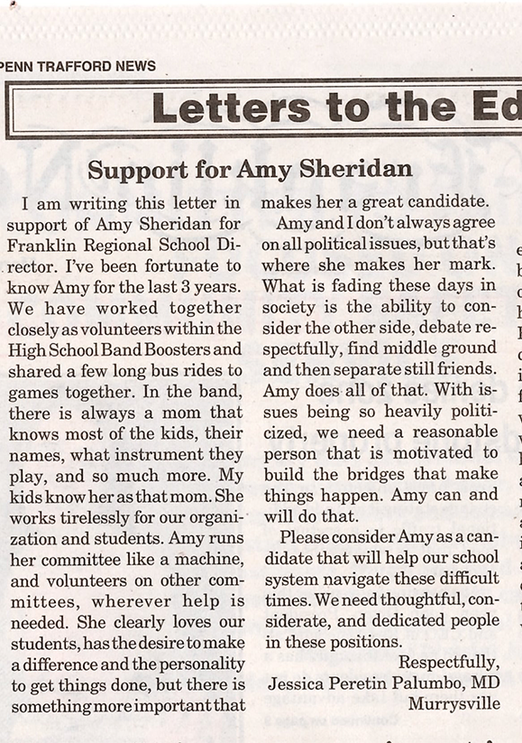

“Amy has been attending school board meetings for a long time, and she also shows up to committee meetings such as the curriculum, technology, policy, and finance committee. She would be a great addition to the school board."
Herb Yingling
Franklin Regional School Director 2001-2024


Letter to the Editor
Dr. Susan Greensberg
former FR school director
(1981-1989)
Letter to the Editor by Evelyn M.
Penn Franklin News, 5 May, 2025
“...She is genuinely invested in the lives of students, and has shown this through her involvement in the school board over the years. As one of the few regular attendees at meetings, Mrs. Sheridan is well informed of current and past board policies, concerns, and issues. With a position on the school board, she will use her understanding of students to better Franklin Regional....."


Letter to the Editor by Zoe Moser
Trib Review, April 29, 2025
“If I know anything about Amy Sheridan, it’s that she is deeply invested in Franklin Regional’s students. Her involvement has given her a unique perspective that will allow her to keep students at the center of her decision-making."



